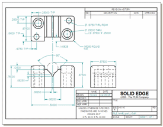
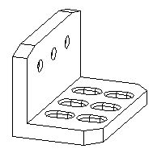
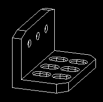
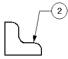
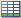

Quick-Start overview for AutoCAD 2D users
As you evolve from 2D to 3D, you can work in the AutoCAD 2D mechanical drafting program and then open your design files directly in the Solid Edge Draft environment for 2D view generation and to take advantage of its unique drawing and diagramming capabilities. This quick-start overview is for those making the initial transition from AutoCAD drafting to Solid Edge drafting. It identifies some of the differences between the 2D programs. It also explains how to choose the Solid Edge drawing sheets, templates, color schemes, and styles that emulate the AutoCAD environment.
Once you are comfortable with the Solid Edge 2D drawing and view generation capabilities, you can learn how to use the Solid Edge 3D view generation capabilities.
2D workflow overview
In AutoCAD you create a drawing of a part by placing predefined views from Model Space into Paper Space. You can then add the necessary dimensions and annotations required to complete the drawing.
In Solid Edge the process is similar, but more automated.
In Solid Edge, you generate 2D views in the Draft environment in a draft document (dft), using the 2D Model sheet and one or more working sheets. You can draw, diagram, dimension, and annotate geometry on the 2D Model sheet, and then use the 2D Model View command to create views of the design and to place them on an active working sheet. Precision tools that combine intelligence with geometry associativity are available at all times.
You can even use existing 2D drawing views to create new drawing views.
AutoCAD 2009 .dwg and .dxf files can be opened directly in Solid Edge. You can import drawings created in earlier AutoCAD releases using the AutoCAD Translation Wizard, or you can drag your files onto the drawing sheet, which automatically generates blocks for you. If you import drawings, you can use the drawing templates, drawing sheet borders, and color scheme specifically designed to emulate the AutoCAD environment.

Get started right away using one of these basic 2D workflows.
-
- Creating a Schematic Diagram
-
Here is the basic procedure for creating a schematic diagram:
-
Use the 2D Model Sheet command to display the full-scale 2D Model sheet.
-
Use the Drawing Area Setup command to define a work space on the 2D Model sheet.
-
Add your block geometry. Here are a few of the ways you can do this:
-
Using the Place Block command, place existing electrical, mechanical, or piping blocks from the Sample Blocks library in the Solid Edge program folder.
-
Using the Block command, create new blocks with 2D line drawing tools.
-
Drag existing .dwg or .dxf blocks onto the sheet and then modify the block graphics.
-
-
- Creating a 2D Model View
-
Here is the basic procedure for creating a 2D model view:
-
Use the 2D Model Sheet command to display the full-scale 2D Model sheet.
-
Use the Drawing Area Setup command to define a work space on the 2D Model sheet.
-
Place and/or draw the design geometry on the 2D Model sheet, using any combination of .dwg or .dxf file import, drag an existing .dft file, and 2D line drawing tools.
-
On the working drawing sheet, use the 2D Model View command to create one or more 2D views that reference the 2D model geometry. You can assign a unique caption to each view.
-
Draft tutorials
There is a full set of tutorials available for the Draft environment.
-
Tutorials are available on the Solid Edge start-up page. Under Learn Solid Edge, click the link, Try a start-to-finish workflow.
This opens a .pdf file, the Solid Edge 2D Drafting test drive. This contains three tutorials.
-
You also can find the tutorials inside Solid Edge, on the Learn Solid Edge pane.
Navigating the Solid Edge user interface
Solid Edge employs context-sensitive command bars and dialog boxes, and sophisticated user assistance mechanisms to make your work easier and more intuitive.
-
Solid Edge command tips provide contextual assistance in text boxes as you work with Solid Edge. You can turn them on and off using the Show Command Tips option on the Helpers tab of the Solid Edge Options dialog box.
-
When a command is active, you can press F1 to display help for the command.
-
You also can press Shift+F1 to initiate context help . When this tool is displayed, you can click a command on the ribbon to display help, without selecting the command.
-
To learn how to use the Help system, including Command Finder, see these Help topics: Learn Solid Edge and Finding commands in Solid Edge.
-
To learn how to search for information in the Help system, see the topic, Searching help.
Drawing environment and files
In Solid Edge, there is one drawing environment—Draft—with an associated file type of *.dft. In the full Solid Edge product, there are also 3D modeling environments: Part (*.par), Sheet Metal (*psm), and Assembly (*.asm). Because 3D modeling is an integral part of Solid Edge, there are references to the 3D environments throughout the documentation. If your version of Solid Edge permits, you can automatically generate different types of 3D views from part, assembly, and sheet metal files using the Drawing View Creation Wizard. To learn about the 3D drawing workflow, see the Drawing Production Help topic.
In the Solid Edge Draft environment, you can open, view, and reference .dft files containing drawing views generated from 3D models, and you can select elements in them and use them to create new views.
To learn about creating new documents in general, see the Help topic, Creating documents and using templates. Read on for information specific to AutoCAD documents and templates.
- The two basic methods for bringing AutoCAD files into Solid Edge are:
-
-
Use the Open command to access the AutoCAD Import Wizard. You can open AutoCAD documents in Solid Edge with the Open command. In the Open File dialog box, after you select the AutoCAD document you want to open, click the Options button to display the AutoCAD Import Translation Wizard.
The wizard contains a series of dialog boxes that allow you to do such things as:
-
Preview the contents of the AutoCAD file.
-
Specify the layers in the AutoCAD file you want to preview.
-
Zoom in and out, pan, and fit the preview.
-
Specify a defined view orientation for the AutoCAD file.
-
Specify the sheets you want to translate.
-
Save the AutoCAD bodies to .SAT format.
Use the Help buttons on the translation wizard dialog box to learn about the different translation options associated with each step.
-
-
Drag a .dxf or .dwg file onto a drawing sheet. This method provides automated, on-the-fly translation and generates a Solid Edge block. See the Help topic, Using blocks, for more information about dragging block files.
Additional information is available here:
-
- Drawing sheets
-
In a Solid Edge 2D Drafting document, there are three types of sheets:
-
A 2D Model sheet, which is equivalent to 2D Model space.
-
One or more working sheets, which are equivalent to AutoCAD layouts.
-
A background sheet, which contains the drawing border and title block for the working sheets.
Predefined Solid Edge 2D Drafting blocks provide drawing borders and title blocks for 2D Model sheets, or you can supply your own.
The 2D Model sheet is where you draw and annotate at a scale appropriate for the overall size of the part you are designing, yet it prints your drawing with annotations appropriately scaled to the output sheet size you specify.
In Solid Edge, you can draw, diagram, dimension, and annotate geometry on the 2D Model sheet, and then use the 2D Model View command to create 2D drawing views of the 2D design and place them on an active working sheet.
You can use the Auto-Hide layer of the 2D Model sheet to place dimensions that drive the size of the geometry, yet are not visible when a drawing view is placed on the working sheet.
To learn how to set up drawing sheets, see the Drawing sheets Help topic.
-
- Layers
-
Draft documents contain a single set of layers that are used across the entire document. If a layer is created on Sheet1, the layer name is also available on all additional sheets, including the background, 2D Model, and any new sheet you create.
The Hide and Show commands that control layer display are sheet sensitive. For example, you can place geometry on Sheet1/Layer1 and then add more geometry to Sheet2/Layer1. Both Sheet1 and Sheet2 have Layer1 but their show/hide states can be controlled separately.
When you place an element on a drawing sheet, it is assigned to the active layer. To make another layer the active layer, you can double-click the layer entry on the Layers tab of the Library pane, or you can use the Make Active command on the shortcut menu. You can assign an element to only one layer, but you can change the layer that an element is assigned to using the Move Elements button on the Layers tab.
To learn how to access the Layers tab and what the layer symbols indicate, see the Help topic, Layers overview.
Note:You can use the Delete Empty Layers command on the Layers tab to delete any unused layers that appear in AutoCAD documents that you open in Solid Edge. To learn more about how layers translate, see Working with Autodesk Files in Solid Edge.
- Measurements
-
The working units for a new document are based on the option you selected when you installed the software.
The units of measure settings for an existing document are stored as file properties within the document. You can set units of measure in both English and metric units for values such as length, area, or angles. You can change the unit of measure at any time while you are drawing, and the document still retains complete accuracy of the measurements in the drawing.
The precision readout property sets the number of significant figures to display. It sets the accuracy of the unit readout value. The precision setting does not alter the numbers that you type, only the display of the numbers in the box. Values ending in 5 are rounded up. For example, if the precision readout is .123 and you draw a line that is 2.1056 inches long, then the line value length is rounded. The length value appears as 2.106 inches long. If you are using mm as your drawing sheet units, you can have the values display as 3.5 mm or 3.50 mm.
To learn about using measurements, see the Help topic, Distance and area measurement.
Colors, styles, and templates
Solid Edge uses color schemes, styles, and templates to maintain drawing and design standards and manage display settings.
- Color schemes
-
Color schemes apply display colors for highlighted, selected, and deselected element states, as well as to the window background color. Color schemes do not apply formatting to dimensions or annotations, lines, text, and other graphical elements.
You can use the color schemes supplied with Solid Edge—Solid Edge Default (white background) and AutoCAD Model (black background)—or you can create a custom color scheme. To see what colors are associated with these color schemes, and to change from one to another, on the File menu, click Settings→Options→Colors.
Note:The AutoCAD Model color scheme is applied automatically on both the 2D Model sheet and the working sheet.
Color schemes are user preferences, not file preferences. This way, when you open a document created by someone else, you see the familiar color scheme that you set in Solid Edge, not the colors someone set in the document on another computer. This is beneficial especially when you work in a large group. All users in the group can use the same color standards by setting the same color options in Solid Edge. Then, when you receive a document from another organization, you can open the document and see the colors according to your group's standards, not the standards of another organization.
- AutoCAD Color 7
-


The AutoCAD color 7, which displays black or white based on the background color, is supported in Solid Edge in two ways.
-
The AutoCAD Model color scheme, described above, uses the AutoCAD color 7. A white background display in Solid Edge will create black objects. A black background display will create white objects. If an object in the AutoCAD file has a color other than color 7, that object translates as is. A yellow line in AutoCAD will be yellow in Solid Edge.
-
To apply the Black Or White color to an individual object, select the Black/White icon from a Color selection list on a dialog box or command bar. You cannot use the Black Or White color to set the background; it only controls the color of the objects and is dependent on the background color.
-
- Templates
-
A template is a document that provides default settings for text, formats, geometry, dimensions, units of measurement, and styles that are used to produce a new drawing. Solid Edge provides a variety of draft templates. They also set the 2D Model sheet to be the active sheet.
To apply a template to a an existing .dxf or .dwg document that you are going to translate using the AutoCAD Translation Wizard, choose the template in Step 2 of the wizard.
- Sample drawing sheet border blocks
-
Solid Edge provides a Sample Block Library file that contains sample sheet borders with title blocks. These blocks contain the geometry to display a border around a set of geometry in the 2D model. These blocks also contain examples of block labels and property text, which extracts information and displays it in the title block.
The sheet border blocks are located in the TitleBlocks.dft file in the \Program Files\Solid Edge 2D Drafting Version#\Sample Blocks folder. You can drag one of these border blocks onto a working sheet or background sheet. To scale the border block to the geometry, first display the 2D Model sheet and then use the Drawing Area Setup command to select and insert the border block.
- Creating and modifying drawing borders
-
You also can create drawing borders from scratch or from an existing CAD file. If you are creating the graphics from scratch, you should consider modifying the generic background sheet graphics that are supplied when you create a new document using a template. These graphics have been sized correctly for the Standard English and metric sheet sizes. You can easily delete and add graphics to meet your requirements. You can use the Grid command to precisely position the new graphics you place. If you translate graphics from another CAD system, they are placed on the working sheet or 2D Model sheet. You can then cut and paste them to the background sheet, or create a block from these graphics. In either case you may want to consider using property text to ensure consistency in the title box of your drawing border.
- Property text
-
Property text is variable text that is referenced and maintained without manual editing. Property text strings retrieve file or project-related data and display it in a callout, balloon, feature or datum control frame, and similar annotations. For example, you can use property text to extract and display a file's name and last modification date, and they will remain updated without manual editing. All standard Solid Edge file properties, such as title and file name, are available for use as property text. Properties that can be computed from data in the file, such as active sheet and number of sheets, are also available.
Property text is updated automatically during document transition (for example, when you open or save a file). You can also update all property text fields in the current file at any time with the Update All Property Text command.
To learn more, see the Help topic, Using property text.
- Styles
-
As in AutoCAD, object properties are baselined or seeded from what are called styles. There are styles for dimensions/annotations, lines, fills, hatches, and text. Styles are applied globally via templates, and they can be modified locally when an object is placed.
To define or modify a global style, use the Styles command, then from the Style dialog box, choose the Style Type that you want to create or modify.
To make modifications to the base properties of an object during placement, you use a combination of context-sensitive command bars and property dialog boxes, which are displayed automatically.
After placement, you can right-click an object and select the Properties command to make overrides to line color, width, style, font, text, and so forth.
To learn more about working with styles, see the Help topic, Applying formats with styles.
- Fonts
-
Solid Edge uses TrueType fonts. These fonts include degree symbols, diameter symbols, and other special characters and symbols that are not usually included in a typical word processing package.
With TrueType fonts, what you see on the screen is what appears on the printed page. The screen display of the document closely matches the printed document.
Selecting elements
AutoCAD offers single element selection, fence selection, and adding or removing elements from a selected set. Solid Edge provides the same functionality, plus additional selection methods, such as Select tool, QuickPick, and Smart Select.
 Select tool
Select tool-
The Select tool selects elements. When you click the Select button (shown above), the cursor changes to a northwest arrow . It also displays a locate zone indicator at the end of the northwest arrow. As you move the cursor, any element that the locate zone passes over is displayed in the highlight color. When an element is highlighted, you can click to select it. You can also click and then drag the cursor to fence elements.
You can use the Select command bar to set selection options, such as whether an element must be completely inside or outside the fence to be selected. You can also use the Shift and Ctrl keys to add elements or remove elements from set of fenced elements.
- QuickPick
-
If you want to select an element that you cannot easily highlight with the cursor, you can use the QuickPick list. For example, when several elements overlap, move the cursor over the elements and stop moving the mouse. When the software displays the QuickPick prompt, right-click to display the QuickPick list. As you move the cursor over each item on the QuickPick list, the corresponding overlapping elements highlights in the graphic window. To select the highlighted element, click its entry in the list.
- SmartSelect
-
You can use the SmartSelect button to select all elements on the active sheet that have similar attributes, for example, all elements of the same color or line width, on the same layer, and so forth. This is very useful if you want to make changes to similar elements throughout a drawing sheet. To create a selection set with SmartSelect, click the Select command, and then on the Select command bar, click the SmartSelect button (shown above). After you select an element, you can use the SmartSelect Options dialog box to set selection options. Once you create a selection set, you can use the Properties command to make changes to the elements.
To learn more about selecting objects and elements, see the Help topic, Element and object selection.
Blocks
In Solid Edge, block is a generic term for one or more 2D elements or objects that can be referenced as a single entity. A block consists of both graphics and data.
A master block is the combined graphics and data used to define a block. A master block is like a template or prototype for block occurrences (instances). A master block is created with the Block command and edited with the Open command. It consists of a block name, an origin point, and associated data, which can be referenced in callouts and property text.
Similar to the AutoCAD Attribute, Solid Edge uses block labels. Block labels define one or more attribute name-and-value pairs to contain alphanumeric data for a master block. Label values can be predefined or specified when the block is inserted.
To see a table of block terminology and to learn how to create, convert, access, and organize blocks, see the Help topic, Using blocks.
Drawing tools, grids, relationships and constraints
 Grids
Grids-
The Grid command helps you draw elements with precision. It displays a series of intersecting lines or points and x and y coordinates that allow you to draw and modify elements relative to known positions in the working window and known distances apart. You can use the Grid command with all element drawing commands.
The Grid command allows you to provide coordinate input to commands as you draw. The x and y coordinates are relative to an origin point that you can position anywhere in the window. You can change the location of the origin point at any time by clicking the Reposition Origin button on the command bar and then clicking a new position in the window. As you move the cursor, the horizontal and vertical distance between the cursor position and the origin point is dynamically displayed.
To learn more, see the Help topic, Working with grids.
- Geometric relationships and constraints
-
In Solid Edge, elements and objects are associative. In a typical associative relationship, one element is considered the parent or driving element, and another element is considered the child or driven element. When you modify the parent element, the child element updates.
Associativity makes it easy to draw something initially, and it is easy to make modifications without affecting the overall integrity of the design. For example, when you move or resize a line or arc, other elements that are attached to it move/resize along with it without becoming detached. Similarly, you can change a dimension value to change the length of a line, and an attached object changes also.
To use associativity while drawing and dimensioning, set the Maintain Relationships option.
To learn more and to learn what the relationship symbols mean, see the Help topic, Working with geometric relationships.
- IntelliSketch
-
IntelliSketch is a dynamic drawing tool used for sketching and modifying elements. IntelliSketch employs relationship indicators, alignment indicators, intent zones, and locate zones to help you draw with precision. For instance, IntelliSketch allows you to sketch a line that is horizontal or vertical, or a line that is parallel or perpendicular to another line or tangent to a circle. You can draw an arc connected to the end point of an existing line, draw a circle concentric with another circle, draw a line tangent to a circle—the possibilities are too numerous to list.
To learn more, see the Help topic, IntelliSketch.
Dimensions, annotations, and tables
Solid Edge dimensions, annotations, and tables are added to drawings using command buttons that are specific to the type of dimension, annotation, and table that you want to place. During placement, you use the context-specific command bar or dialog box to provide all of the inputs needed to create the element and to specify how you want it to be formatted. The status bar provides prompts for creating and placing each element.
- Dimensions
-
With dimensions, you can add value labels to design geometry by measuring characteristics such as size, location, and orientation of elements, such as the length of a line, the distance between points, or the angle of a line relative to a horizontal or vertical orientation. Dimensions are associative to the elements to which they refer, so you can make design changes easily. Solid Edge provides a full complement of dimensioning tools so you can document your drawings.
-
 The Smart Dimension command places the appropriate dimension type based upon the element selected. It
can be used on any single element or between two elements.
The Smart Dimension command places the appropriate dimension type based upon the element selected. It
can be used on any single element or between two elements. -
Linear dimension—Measures the length of a line or the distance between two points or elements. You can place linear dimensions with the Coordinate, Distance Between, Smart Dimension, and Symmetric Diameter commands.
-
Angular dimension—Measures the angle of a line, the sweep angle of an arc, or the angle between two or more lines or points. You can place angular dimensions with the Angle Between and Smart Dimension commands.
-
Radial dimension—Measures the radius of elements, such as arcs, circles, ellipses, or curves. You can place a radial dimension with the Smart Dimension command.
-
Diameter dimension—Measures the diameter of a circle. You can place a diameter dimension with the Smart Dimension command.
-
Coordinate dimension—Measures the distance from a common origin to one or more keypoints or elements. You can place coordinate dimensions automatically using the Automatic Coordinate Dimension command.
To learn about using dimensions, see the Help topic, Dimensioning overview.
- Dimension prefix
-
The Dimension Prefix dialog box provides a method of adding prefix, suffix, and superfix text to any dimensional value. This same tool also provides a means to add special character symbols to your dimension such as degree, diameter, depth, or counter bore.
- Auto-Dimension command
-
The Auto-Dimension command can be used with IntelliSketch to automatically add driving dimensions as you draw. The Auto-Dimension command specifies how and when the dimensions are added.
You should also turn on the Sketching tab→Relate group→Maintain Relationships command. When Maintain Relationships is set, relationship handles are placed when you draw new elements using IntelliSketch, and when you use relationship commands.
-
- Annotations
-
In Solid Edge, all annotation types are defined in the system and do not require custom blocks to place them. You only have to select one of the annotation commands, type the annotation text and select formatting options, and then click to place the annotation on the drawing.
Here are a few of the annotation commands:
-
 Balloon command
Balloon commandProduces a balloon attached to the element you click. For example:

-
Callout command
Produces a callout attached to the element you click. For example:

-
Feature Control Frame command
Produces a feature control frame attached to the element you click. For example:

-
Weld Symbol command
Produces a weld symbol attached to the element you click. For example:

To learn more, see the Help topic, Annotations Overview.
-
- Tables
-
There are two kinds of tables that you can place on your drawing.
Hole Tables—Hole tables can be placed on simple 2D circles and arcs. Hole tables define the size and location of a hole. A hole table works much like a software spreadsheet. Holes are represented as rows in the table and dimensions of the holes as columns.

You can create hole tables based on the following hole dimensions:
-
hole size only
-
hole location only
-
hole size and location
See the Help topic, Hole Tables, to learn how to create a hole table.

User-defined Tables—The Table command creates a fully customized table on the fly. When you select the Table command, you are prompted to specify one or more table titles, table layout, data source, and format. You can use the Table command, for example, to create and place a parts list on the drawing or to create a title block.The Table command provides a default style, Normal, but you can create a custom Table style that can be selected when you place a table on the drawing. To define your own custom Table style, use the Table Style dialog box: Choose the Styles command, and then select the “Table” Style Type.
To learn more about user-defined tables, see the Help topic, User-defined tables.
-
Printing documents and drawings
As you work on a document you may need to send a copy of it to a specified printer, plotter, or file. With the Print command, you can:
-
Print an entire document or specific sheets from a document.
-
Print a Draw In View window.
-
Print a 2D Model sheet.
-
Print a draft copy of a document.
-
Set printing options, such as the range of sheets or number of copies to print.
Solid Edge supports WYSIWYG plotting, using standard Windows plotting capabilities. It also supports pen plotters, subject to the limitations of the device driver.
Saving Solid Edge documents and drawings
You can use the AutoCAD Translation Wizard to save Solid Edge documents to AutoCAD format. The wizard allows you to easily map Solid Edge entities, such as line type, line width, font, and hatch style, to an AutoCAD document format.
To learn more, see the Help topic, Saving Solid Edge documents to other formats.